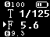
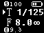
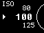
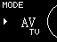
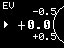
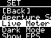
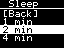
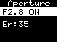
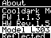

1. 产品概述
L303 是全金属单拨盘反射式测光表，当前固件具备以下功能：
AV光圈优先测光TV快门优先测光ISO设置EV曝光补偿设置- 单次测光与实时测光
- 光圈档位与快门档位启用/禁用
- 自动/手动亮度与屏幕反色显示
- 自动休眠、按键唤醒、电池与充电显示
2. 操作方式
本机当前交互基于 1 个按键和 1 个磁编码器旋钮。
按键逻辑
短按：主页触发测光；菜单或列表页用于确认。
长按：主页进入菜单；子页面或列表页返回上一级。
旋钮逻辑
- 主测光页中，
AV模式调光圈，TV模式调快门。 - 菜单或列表页中，用于移动光标或切换当前选项。
- 亮度窗口中，在手动模式下调节亮度等级。
3. 开机与测光
3.1 主测光页
主页面会显示当前 ISO、快门值、光圈值、EV、模式箭头、∞ 连续测光图标以及电池图标。

AV 模式：旋钮调光圈，屏幕给出对应快门结果。

TV 模式：旋钮调快门，屏幕给出对应光圈结果。
超出可用范围时会显示异常提示，表示结果不可用。
3.2 测光方式
Live Meter关闭时：主页面短按按键触发一次测光，完成后界面会短暂闪烁提示。Live Meter打开时：环境光会周期性刷新，主页面短按按键不再执行单次测光流程。
4. 功能菜单
在主测光页长按按键，可进入功能菜单。
启动器当前包含 Home、ISO、MODE、EV、SET、About 六个入口。
- Home：返回主测光页
- ISO：设置感光度
- MODE：切换
AV / TV - EV：设置曝光补偿
- SET：进入设置菜单
- About：查看版本、型号、传感器与当前照度
5. 参数设置
5.1 ISO
当前可选 ISO：
6, 12, 25, 50, 64, 80, 100, 125, 160, 200, 250, 320, 400, 500, 600, 800, 1600, 3200, 6400
5.2 模式
AV：光圈优先TV：快门优先
EV 在当前固件中是曝光补偿项，不是独立测光模式。5.3 EV 曝光补偿
当前可选范围为 -3.0 EV 到 +3.0 EV，步进 0.5 EV。
-3.0, -2.5, -2.0, -1.5, -1.0, -0.5, 0, +0.5, +1.0, +1.5, +2.0, +2.5, +3.0

ISO 选择页面。

MODE 选择页面，仅在 AV 与 TV 间切换。

EV 曝光补偿页面。
6. 设置菜单
SET 菜单会根据当前硬件状态显示以下项目：
Aperture SetShutter SetLive MeterDark ModeBrightnessSleep Time

设置菜单示意。
6.1 Aperture Set
- 用于启用或禁用光圈档位。
- 支持档位：
F1, 1.2, 1.4, 1.8, 2, 2.4, 2.8, 3, 3.2, 3.5, 4, 4.5, 5, 5.6, 6.3, 7.1, 8, 9, 10, 11, 13, 14, 16, 18, 20, 22, 26, 28, 32, 36, 40, 45, 52, 56, 64 - 进入页面后旋钮切换档位，短按切换
ON/OFF。 - 固件至少保留 2 个启用档位，不能全部关闭。
6.2 Shutter Set
- 用于启用或禁用快门档位。
- 支持档位：
1, 2, 4, 8, 15, 30, 60, 125, 250, 500, 1000, 2000 - 进入页面后旋钮切换档位，短按切换
ON/OFF。 - 同样至少保留 2 个启用档位。
6.3 Live Meter
- 打开后：照度持续刷新。
- 关闭后：使用单次测光流程。
6.4 Dark Mode
- 打开：反色显示。
- 关闭：普通显示。
6.5 Brightness
- 进入后弹出亮度窗口。
A：自动亮度。M：手动亮度。- 短按按键切换
A / M。 - 在
M模式下旋转旋钮调节亮度1到10。
6.6 Sleep Time
- 可选：
1 min、2 min、4 min - 默认值：
2 min

Sleep Time 选择页面。

Aperture Set 页面，旋钮切换档位，短按切换启停。
7. About 页面
About 页面当前显示以下信息：
- 产品名
Cooldark Meter - 固件版本
FW 260526 - 硬件版本
HW Rev.1.5 - 型号
L303 - 类型
Reflected Light Meter - 当前识别到的传感器名称
- 当前照度值

About 页面可用于查看版本、型号、传感器与照度信息。
8. 电池与充电显示
- 主页面右上角显示电池图标。
- 充电时电池图标会动态变化。
9. 休眠与唤醒
- 无操作一段时间后，设备会关闭 OLED 并进入深度休眠。
- 休眠前会关闭传感器电源。
- 按键可将设备唤醒。
- 唤醒后会重新初始化屏幕、传感器与 UI。
- 非实时测光模式下，唤醒后会自动重新测光一次。
当前
About 页面下不会触发自动休眠。10. 使用建议
反射式测光
建议尽量按被摄体反射光环境进行测量。
建议尽量按被摄体反射光环境进行测量。
逆光场景
逆光建议靠近被摄物测光，避开逆光干扰，如果无法靠近被摄物应当加两档曝光。
逆光建议靠近被摄物测光，避开逆光干扰，如果无法靠近被摄物应当加两档曝光。
提升效率
如果常用镜头或快门范围固定，可在
如果常用镜头或快门范围固定，可在
Aperture Set / Shutter Set 中关闭不常用档位。